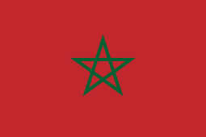

Egipto es conocido por sus pirámides, templos y museos que albergan tesoros de la antigüedad. La cultura egipcia es rica en historia y tradiciones, y su capital, El Cairo, es una de las ciudades más pobladas de África. La religión principal en Egipto es el islam, y la mayoría de la población es musulmana. La comida egipcia es conocida por sus platos como el koshari, el falafel y el shawarma.
Sudáfrica
Sudáfrica es conocido por sus paisajes naturales impresionantes, desde las montañas de Drakensberg hasta las playas de la Costa del Cabo. La cultura sudafricana es una mezcla de tradiciones africanas, europeas y asiáticas. La música y la danza son una parte importante de la cultura sudafricana, y el país es conocido por sus estilos de música como el jazz y el mbalax. La comida sudafricana es conocida por sus platos como el bobotie, el boerewors y el bunny chow.
Marruecos

Marruecos es conocido por sus ciudades imperiales, como Marrakech y Fez, y por su arquitectura islámica. La cultura marroquí es una mezcla de tradiciones árabes, bereberes y francesas. La religión principal en Marruecos es el islam, y la mayoría de la población es musulmana. La comida marroquí es conocida por sus platos como el tagine, el couscous y el harira.
Nigeria
Nigeria es conocido por sus ricos recursos naturales, como el petróleo y el gas natural. La cultura nigeriana es diversa, con más de 250 grupos étnicos y más de 500 idiomas. La música y la danza son una parte importante de la cultura nigeriana, y el país es conocido por sus estilos de música como el afrobeat y el highlife. La comida nigeriana es conocida por sus platos como el jollof rice, el suya y el egusi.
Etiopía
Etiopía es conocido por su rica historia y cultura, con monumentos como el obelisco de Axum y la iglesia de San Jorge. La cultura etíope es una de las más antiguas de África, y la religión principal en Etiopía es la cristiana ortodoxa. La comida etíope es conocida por sus platos como el injera, el tibs y el misir wot.